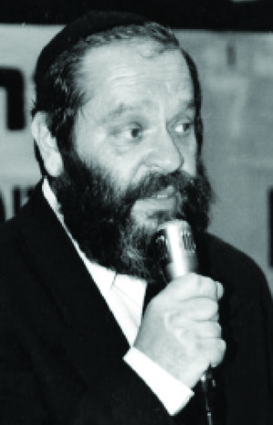

Secret Bris Mila in a Red Army Camp
Lawyer Avrohom (Arkady) Pogatch is a Chabad Chassid who lives in Migdal HaEmek. * He shares fascinating memories of his childhood in Russia.

His good heart won. He walked back and picked up the phone. A hesitant voice said, “Avrohom, this is Mariasha. I need help right away.”
Avrohom’s forehead creased and he worriedly asked, “What’s happening?”
Mariasha told him the following. She was young when she married; young and inexperienced. She gave birth about a year later but the joy that filled her heart soon dissipated.
Mariasha was visited by representatives of the local social welfare office. They looked around and noticed the peeling walls and concluded that the house and the baby were neglected. A few days later, they came on another visit and took the baby.
“Now, I don’t have my Motty,” she concluded in tears.
Avrohom thought for a long while until he came up with an idea. “Mariasha, are you listening?” he asked. “Don’t worry. The child will be returned to you. I guarantee it!”
Avrohom was a man of his word. A few weeks after that phone conversation, he appealed in court. After a difficult court battle the baby was returned to its mother.
That’s Avrohom Pogatch, a stubborn Chassid and a man of action.
SECRET BRIS
Early on a beautiful spring day, I found myself walking down the street in Migdal HaEmek. Armed with Arkady’s precise directions, I stopped at a large, impressive building in the center of town. The building is populated by offices, some belonging to private doctors, others to CEO’s, while the third floor belongs to local lawyers.
R’ Avrohom Pogatch, a bearded Chassid, greeted me with a warm handshake and invited me to sit down on one of the comfortable leather chairs until he was available to talk to me. From my seat I looked around the room and saw leather armchairs scattered about, a long conference table for meetings with clients, and the walls adorned with awards and certificates.
At the front of the office I was surprised to see a beautiful Aron Kodesh made of oak with an amud for t’filla next to it. There were Siddurim translated into Russian. Later on, I realized that his office serves as the center of his activities with the highlight of his activities a minyan that takes place on Shabbos and Yom Tov.
“I was born in Raal which is near frozen Siberia,” he began:
Despite the harsh existence under Stalin, I was educated in an authentic, Chassidic environment. When I was very young, my father would take me to shul.
The spiritual environment at the time was dreadful. I don’t need to go into detail about the punishments meted out to all Jews who kept mitzvos; all the more so, to those who taught Torah. But my father, who had learned about the importance of mesirus nefesh and because of the chinuch he had gotten from his parents, did not withhold a Jewish education from me.
We lived for a few years in Raal. Then, because a wicked woman informed on us, we had to pack our belongings and move to Dnepropetrovsk, the Rebbe’s city. It was because of my bris mila. My bris took place on time in our house which was in the army camp. My father, being a senior commander, had to live in the army camp that he ran.
When I grew older, my mother described what happened in the closed room. They made sure to cover the windows and lock the door. The bris took place quietly and quickly and when the mohel finished his work and the brachos were said, my mother went out to the living room to receive the dozens of women who came to congratulate her on my birth.
One of the neighbors, a passionate anti-Semite, noticed blood on my clothing. She went straight to the KGB where she told what she saw.
A few hours later there was a pounding at our door. It was the KGB. My father was taken for a prolonged interrogation and when the journalists found out about it, the country was in an uproar. Every day, articles were published denigrating Jews and my father in particular. The army and the media kept saying it wasn’t possible to have a religious Jew serving as a senior commander. They said he should be prosecuted to the fullest extent of the law.
Due to the public furor, the government decided to conduct an investigation. A committee was formed consisting of dozens of government figures and anti-Semitic politicians. Stalin led them.
At the conclusion of the barrage of testimony from dozens of soldiers and extended interrogations, my father was called to face the committee. With quaking knees, my father stood before the committee that would declare his fate, but here divine providence intervened. One of the members of the committee whispered to my father, telling him to get out of the place. It turned out, this person was a relative of ours and his Jewish conscience had been aroused. Thanks to him, my father was saved from a terrible punishment.
Although he was saved, his being fired from the army was unavoidable. So as I said, we packed our bags and moved to Dnepropetrovsk.
BELOVED TO ALL
The Jewish community in Dnepropetrovsk was large in the period before World War II. Tens of thousands of Jews filled the streets and forty shuls were in use.
After the war, only one shul remained. The community consisted of only a few thousand people and Jewish life was gone. The shul had barely a minyan of old men because the law forbade those under age 60 from going to shul.
My father, who was well-to-do and was in charge of a large factory which supported hundreds of people, also davened in the shul.
In general, my father was considered a sort of unofficial community leader. He was beloved to all, gave of his money to the poor, and took an interest in wayfarers. As a result, he was greatly beloved which helped him in his work of encouraging Judaism among members of the community.
Our spacious home, which was in the center of town, was the address for everything Jewish. A few months before Pesach, our kitchen would be turned into a secret matza bakery. Large sacks of flour were brought in and my mother, together with other righteous women, spent hours kneading dough. My father, along with other men from the community, baked the matzos which then made their way to the homes of Jews.
Due to the enormous fear of the KGB, my father packed the matzos in special boxes that he brought with him from the factory. That is how he managed to transfer the matzos to the homes of Jews without being caught.
Although he managed to evade the KGB’s watchful eye when it came to matza baking, in many other things he faced their wrath. One time, when my father decided to put up a monument in memory of those who had been killed in the holocaust, he was incarcerated for many months. Putting up a monument, especially for Jews, was illegal. Monuments were allowed only to memorialize heroes of the Russian nation.
He was arrested other times, but they couldn’t break his strong spirit. His motto was, “All the threats and prisons won’t break me.” He promoted Judaism in the community without fear and after returning from prison he felt fortunate for having been imprisoned for the crime of promoting Judaism in the Soviet Union.
I experienced my father’s strong spirit as I was growing up. The chinuch that I received was suffused with a true Chassidic flavor, and although I went to public school, I carefully observed everything.
When I was a young boy, I grew large, impressive peios. My blatant Jewish appearance bothered some of the boys who urged me to cut them. I adamantly refused.
When I was still a boy, my father suddenly died. The imprisonments and extended interrogations had weakened him. Following his passing, we had to pack our bags yet again. This time we headed for Dushanbe in Tajikistan where I registered to study law.
I was appointed the general prosecutor of that state when I was only 23. It was a complicated job and the fact that a young man of my age had been appointed to such a position created a stir.
I worked as the general prosecutor for a few years until one day, I decided to leave the job for the good of the community and I opened a law office. The k’hilla was divided into a number of groups. The largest group was comprised of local Jews, Bucharians. The second group was comprised of Jews who had moved to live there after the war.
The community I’m talking about was the Ashkenazi k’hilla which was comprised primarily of Russian Jews. I worked a lot to instill Judaism among them.
We had a shul and a mikva was built at a later point following an instruction from the Rebbe (see box), but we decided to make aliya.
MAJOR MIRACLE
When we received our papers, we went to Moscow. We had a special Torah that we had taken from the Aron Kodesh in Dushanbe. Surprisingly, the customs people did not notice it.
Others, who had taken smaller items, had been caught and jailed, while I, carrying a Torah in my arms, passed through all the inspections.
We arrived in Eretz Yisroel and settled in Netanya where I was a teacher in a school for Russian immigrants. I did not see the Rebbe until 5753 when I was sent by the school to fundraise in the US. Of course, I did not miss an opportunity like that to see the Rebbe.
When I arrived at 770, I submitted a letter to the Rebbe in which I told him the story of my life and asked for his consent to open a school for new immigrants. The Rebbe nodded.
I returned to Eretz Yisroel very eager to start a k’hilla for those who came from my city together with other Russian immigrants. One day, I heard about the town of Migdal HaEmek, a developing town. Among the things that I heard was that they were starting a religious neighborhood and I decided to move there. There is where I opened the first shul for immigrants and it is still in operation until today.
I asked Arkady whether it has been hard to work as a lawyer in a language and environment that are unfamiliar to him. He said:
The training I received in the Soviet Union did not meet the requirements here, so I had to take additional courses. That was years ago, when I wanted to open a law office in Migdal HaEmek. When I told my family, they were very apprehensive. “You can barely express yourself properly in Hebrew, and you want to be a lawyer?” But my determination to work as a lawyer and to help Russian immigrants who needed legal aid overcame any reservations.
On the day to register for the courses I needed, I wrote a letter to the Rebbe. I put the letter into a volume of Igros Kodesh and the answer did not leave me with any doubts whatsoever. The Rebbe showered me with brachos for success in all matters. I decided to go ahead.
My law studies were not at all easy. I was over forty and had a harder time than my classmates, but armed with the Rebbe’s brachos, I persevered. When I finished the work, I received my diploma. You can imagine how happy I was. I felt the Rebbe’s brachos at every step.
***
R’ Avrohom opened a law office and hasn’t rested for a moment since. Throughout the day his office is bustling with new immigrants seeking aid. At the same time, he runs a wide range of spiritual activities.
He took out an album of pictures and flipped through. “Here, we had a shiur for immigrants. The response was amazing.” In the picture are dozens of people sitting around a table, hanging on to every word of the speaker.
Throughout the album I saw Russian Jews posing with R’ Avrohom after they had won some legal victory or another thanks to him.
He opened another office in Tel Aviv. “I discovered that I am needed in the center of the country no less than in the north. Many Russian Jews live in the center too, and so our activities grew.”
THE MIKVA
R’ Avrohom Pogatch recounts:
One day two Jewish young men knocked at my door, who appeared to be observant Jews. When I asked them what they wanted, they told me that they were sent by the Lubavitcher Rebbe from New York and they wanted to build a mikva in the city.
I told them that it was impossible because of the high costs involved and the harsh penalty for anyone who transgresses the law that prohibits the building of mikvaos and shuls. However, they were firm in their resolve. “The Rebbe requested and we will see it through,” they responded forcefully.
In an amazing confluence of divine providence, I met a wealthy Jew who promised to donate the full cost of the construction, and within eight months the mikva was completed.
Shockingly, the KGB never got wind of it, due to the civil war that broke out at that time. Only after I left to Eretz Yisroel did they suddenly take notice…
S.Z. Levin. "Secret Bris Mila in a Red Army Camp." Beis Moshiach, no. 925 (May 5, 2014).